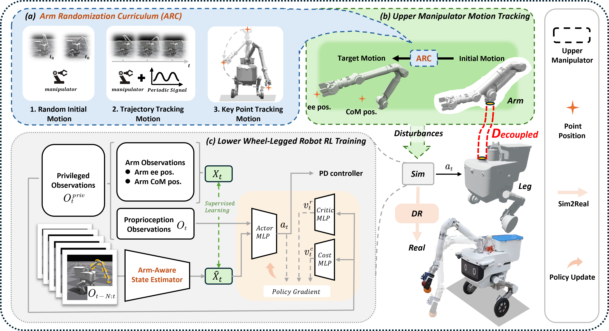

Integrating a manipulator can substantially enhance the task efficiency of wheel-legged bipedal robots. However, manipulator motions introduce time-varying disturbances that make mobile-base stability difficult to maintain. In this paper, we propose a learning-based Decoupled Loco-Manipulation (DeLM) training framework for wheel-legged bipedal robots to solve the issues. First, we present the Arm Randomization Curriculum (ARC), an easy-to-implement arm-motion generator that synthesizes diverse arm motions to inject realistic, time-varying manipulation disturbances into simulation, alleviating the lack of disturbance excitation during training. Second, we propose an Arm-Aware State Estimator (AASE) for locomotion that integrates latent arm representations to better compensate for these time-varying disturbances, improving both stability and robustness. Our experiments demonstrate over a 40% improvement in stability compared with a whole-body control baseline in simulation, and achieve a success rate above 80% in real-world experiments. Within DeLM, the robot serves as a stable and robust command-tracking mobile base that supports diverse, precise manipulation tasks, thereby opening up new possibilities for wheel-legged bipedal robots to perform loco-manipulation reliably.

Overview of the framework DeLM. (a) We propose an arm randomization curriculum. (b) During training, the manipulator moves to target positions according to the proposed randomization strategies. (c) Overall RL training framework for lower platform locomotion tasks.
@misc{zhu2026delm,
title = {{DeLM}: A Decoupled Training Framework for Wheel-Legged
Bipedal Robots to Perform Loco-Manipulation Tasks Stably},
author = {Zhu, Shiyu and Li, Rankun and Li, Qi and Xu, Luhao
and Li, Guangsheng and Wang, Hao and Ma, Zhengde
and Liu, Shenglan and Xie, Wende and Liao, Wenlong},
year = {2026},
note = {Project page},
url = {https://decoupled-loco-manipulation.github.io/DeLM.github.io/}
}